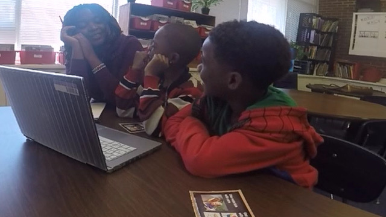

Member Spotlight
Dr. Mansur Choudry
Dr. Mansur Choudry, a Board Certified Behavior Analyst, has been the Director of the Jeffery and Theresa McDougall Autism Clinic at Special Care in Oklahoma City, OK since 2004 and an Associate Professor of Special Education at the University of Central Oklahoma. The McDougall Autism Clinic serves children ages 6 weeks to 18 years of age, providing a fully inclusive program for students without disabilities and students with autism. Dr. Choudry began working at Special Care (http://www.specialcareinc.org) in 1997 as a kindergarten teacher, and then became the Program Coordinator in 1999. With the onset of children diagnosed with Autism Spectrum Disorder, a clinic was set up at Special Care for children with autism spectrum disorders, working with the McDougall Autism Clinic. Behavioral evaluations and intervention recommendations are provided free of charge for children and students served at the Clinic.
Working with students with autism in the United States gave Dr. Choudry the desire to establish programs to benefit children with autism in his native country of Pakistan and other parts of the world. Now there are 4 cities in Pakistan with programs and services for children with autism, including Karachi in the south and Peshawar in the north. They are now in the process of fund raising and accepting material donations to build a center in Peshawar where they can conduct training for parents, teachers and psychologists as well as providing programs for students with autism. Dr. Choudry visits these programs at least once a year.
In addition to establishing and working with programs for children with autism in the United States and Pakistan, Dr. Choudry has helped establish programs for children with autism in Bangladesh, Saudi Arabia and the United Arab Emirates. He conducts training for parents and professionals to empower parents to make conscious, informed and research-based decisions about the therapy for their children. Dr. Choudry is well aware of cultures and their communities and is committed to the success of all these locations for students with autism. He provides consultative services to people in these countries who desire to establish programs and services for children with autism. He also provides training for teachers, leaders and parents on the various characteristics and needs of children with autism, research-based therapies, teaching techniques and decision-making processes for determining appropriate techniques and therapies for each child.

Dr. Choudry training teachers and parents

Dr. Choudry in Pakistan with teachers and children

Dr. Choudry in Pakistan with boy on the playground.
Dr. Robai Werunga
Dr Robai Werunga, DISES Member at Large for Membership Support, is a native of Kenya and lived there for several years before coming to the United States. In Kenya, she earned her first teaching degree in Religious Studies and Swahili at the Egerton University, with which she taught high school for a couple of years. Having gained experience in Special Education in the U.S, Robai recognizes that looking back, so many of her classmates who struggled and were held back in grade school might have had disabilities that went undiagnosed.
Sharing her experiences, Dr. Werunga said not being able to use the degree she earned in Kenya here in the U.S, she found a job working with adults with developmental disabilities, and that is where her journey in Special Education began. “It was quite eye-opening because in Kenya I had very limited knowledge regarding special education supports for an array of disabilities. For example, I had never learned about special education for children with behavioral and learning disabilities. Back in Kenya, “special education” meant special schools to accommodate children who were blind, deaf or those who had physical disabilities”. In recent years there has been emerging awareness for other disabilities, particularly Autism, partly because of the global autism awareness. However, there remains a great need for education, funding and supports for students with Autism and other developmental disabilities. High incident disabilities such as Specific Learning Disabilities (SLD) and Emotional & Behavior Disorders (EBD), typically go undiagnosed. Due to this, there are no established structures to provide systematic supports for students who exhibit characteristics such disabilities within regular public schools.
About a decade ago, the Kenyan government put forth a national Special Needs Education policy framework that provides comprehensive strategies and policies to improve services for people with disabilities. Creating advocacy and awareness, revamping the curriculum, incorporating technology, providing teacher training, and improving data collection are some of the recommendations included in the policy framework to enhance special education services and facilitate inclusive practices. Even with this policy in place, providing equitable inclusive education for students with disabilities still largely remains a challenge.
Intrigued by her experiences and recognizing the status of special education in Kenya, Robai decided to pursue a teaching license and master’s degree in special education at Fayetteville State University in North Carolina and continued with a PhD in Special Education at the University of North Carolina, Charlotte. Robai says the best part of her job is working with preservice teachers to support students from culturally and linguistically diverse backgrounds and, working with immigrant families to identify their needs and to support them with the IEP process. Dr. Werunga is currently an assistant professor of special education at University of Massachusetts, Lowell.
Dr. Werunga’ s goal is to promote awareness of high incidence disabilities in her native country of Kenya, by advocating for assessment, diagnosis and interventions that promote positive school outcomes for these students. Currently, Dr. Werunga is focused on providing supports for immigrant Kenyan families who have children with disabilities to become effective advocates for their children in the US. Her work includes webinars that inform these parents about the special education process and their rights and responsibilities. Through this work and deep commitment, she continues to aspire to making her vision a reality for the children and families of Kenya!
Dr. Robai Werunga (on the left) working with students

Dr. Werunga working with a student